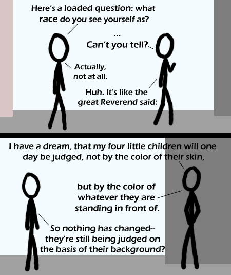

Comic JK 336
When I Feel Like It
⇤
<
?
>
⇥

⇤
<
?
>
⇥
Forum
.
RSS
.
Digg
.
Facebook
.
Reddit
.
Twitter
.
Stumbleupon
Enter your thoughts on number 336 here. Please, no spamming, trolling, phreaking or judging my 'artwork'. Woo first! ...I'm not standing. Do I have undefined skin colour? -adb *but by the color of whatever scenery/object in front of which they are standing. >Fixing the grammar by adding a slash? Come now, we can do better: ...but by the color of that in front of which they stand. >>No, because that eliminates potential plurals: but by whatever color in front of which they stand. >>>If you guys dislike ending sentences with prepositions, why don't you correct the first sentence (ends with 'as')? Ending with a preposition is not bad grammar, and often it's not bad style either. >>>>That's a valid point. *as what race do you see yourself? >>>>>Howzabout "What race do you see yourself as, idiot?" >>>>>>Or, "what color are you standing on front of?" >>>>so nothing has changed - they're still being judged on the basis of their background ? >:p >>>>> best pun so far! <This pun was so good it has now been added to the comic. Nice work!> I just turned around and compared my skin color to the paneling on the wall. Unfortunately, it couldn't be much closer. >So you ran a background check on yourself? >>Dear god. >fail. Interesting, i am simultaneously red, wood, granite, and plaster colored? will this have any ramifications for the theory of relativity? >Just another facet of the concept, nothing special. >Blooody hilarious :] cocaine (no prison for possesion if you have a good lawyer) is white crack is black(minimum and to high prison sentence) but it is the same drug, only the form differ, talk about post racial --the cocainejk comic troll >that's ridiculous; crack is only a 'black drug' if black people themselves won't use the less-penalized form (because they view it as only for white people) нн>>the thing is that crack cost less than cocaine and for a gansta it is hard to turn it into crack into cocaine HCL >Ahh.. now I finally understand why there is a crack problem in my current city, but no meth, and my last city was the other way around. There are actually black people here.. it all makes sense now! нн